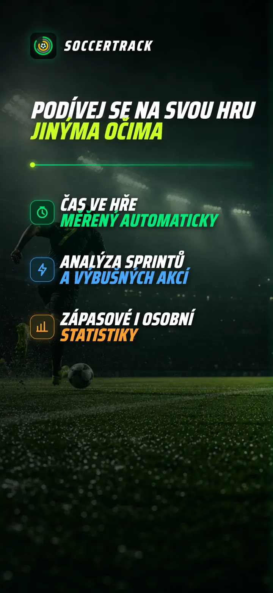
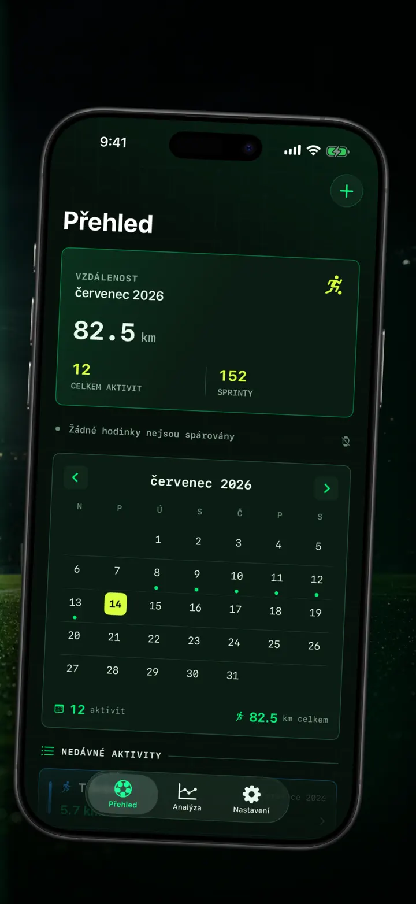
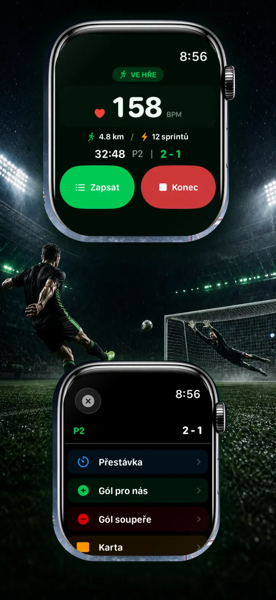
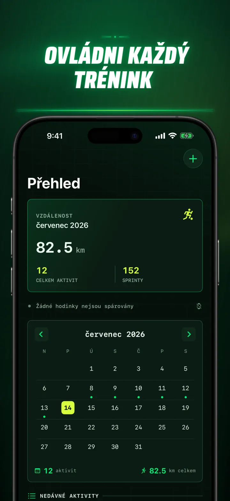
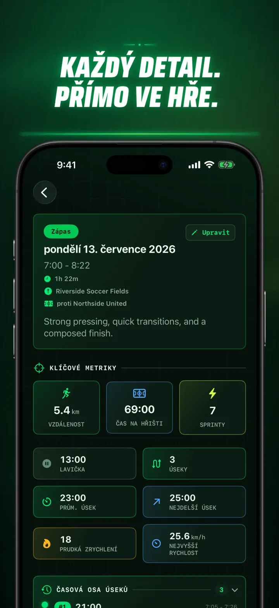
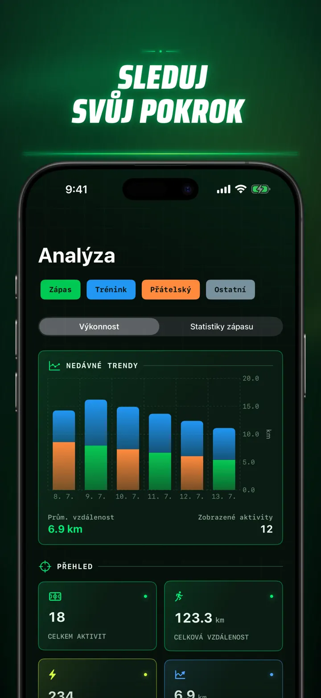
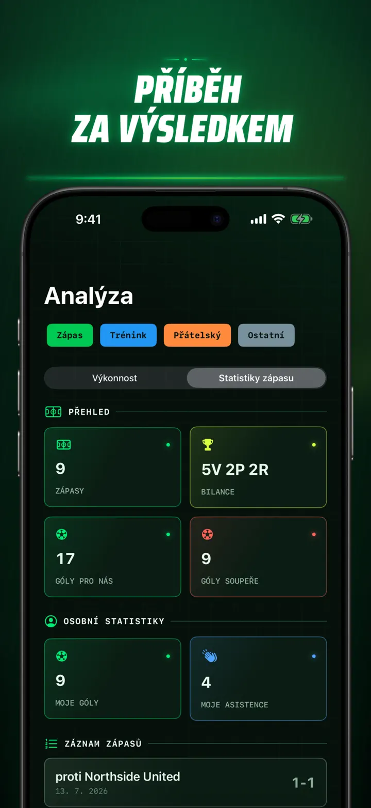
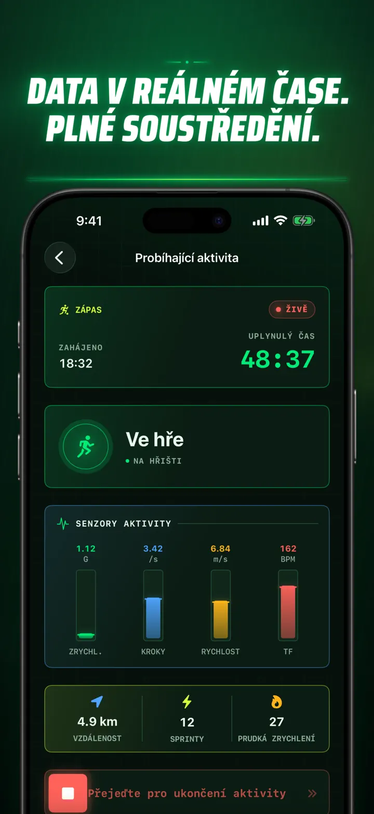
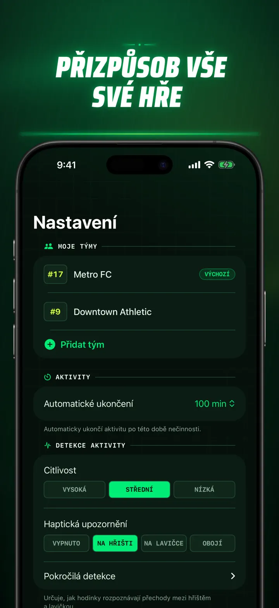
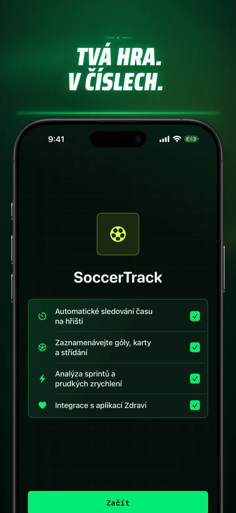

Soccer Time Track
Fotbal: minuty a analýza
Spusťte relaci a hrajte. Apple Watch automaticky rozliší čas na hřišti a lavičce a zaznamená živé metriky, sprinty, události i trendy.
Stáhnout v App Storu
O aplikaci
Podívejte se na svůj zápas jinak.
Soccer Time Track promění Apple Watch v zápasový tracker pro hráče, kteří chtějí znát víc než konečný výsledek. Spusťte relaci na zápěstí, soustřeďte se na hru a potom si na iPhonu prohlédněte podrobný obraz svého výkonu.
AUTOMATICKÝ ČAS NA HŘIŠTI
Zjistěte, kdy jste byli opravdu ve hře. Signály pohybu, cvičení a polohy pomáhají rozlišit aktivní hru, nízkou aktivitu a pobyt na lavičce. Získáte:
- Čas na hřišti a na lavičce
- Herní úseky a přehlednou časovou osu
- Podrobný rozbor průběhu celé relace
ZÁPAS ZE ZÁPĚSTÍ
Vyberte Zápas, Trénink, Přátelský zápas nebo Jiné. Během hry zaznamenejte:
- Góly pro a proti
- Vlastní góly a asistence
- Žluté a červené karty
- Střídání a změny poločasů
VÁŠ VÝKON V ČÍSLECH
Sledujte víc než jen minuty:
- Vzdálenost
- Průměrnou a maximální rychlost
- Sprinty a vysoce intenzivní zrychlení
- Tepovou frekvenci a aktivní kalorie
- Kadenci a zrychlení
ŽIVÁ DATA, PLNÉ SOUSTŘEDĚNÍ
Spárovaný iPhone může zobrazovat živé metriky, zatímco Apple Watch dál zaznamenává cvičení. Vy se soustředíte na zápas a data vznikají na pozadí.
SLEDUJTE SVŮJ POKROK
Uchovávejte zápasy, tréninky, přátelská utkání i další relace v jedné historii. Procházejte trendy a osobní rekordy, porovnávejte výkony a přidejte tým, číslo dresu, soupeře, místo i poznámky, abyste zachovali příběh každého výsledku.
Potřebujete data jinde? Exportujte relace, herní úseky a zápasové události ve formátu CSV nebo JSON.
PRO APPLE WATCH A APPLE HEALTH
S vaším svolením používá Soccer Time Track data cvičení, tepu, pohybu a polohy k tvorbě přehledů a ukládá dokončená fotbalová cvičení do Apple Health. Automatické sledování vyžaduje Apple Watch. Relaci můžete přidat také ručně na iPhonu.
VAŠE DATA, VÁŠ ZÁPAS
Relace zůstávají na vašich zařízeních a při zapnuté synchronizaci s iCloudem ve vaší soukromé databázi iCloud. Soccer Time Track nevyžaduje účet, neobsahuje reklamy a nepoužívá analytiku třetích stran.
Přestaňte odhadovat, kolik jste odehráli. Uvidíte, co jste se svým časem dokázali.
Zásady ochrany osobních údajů: https://masawata.net/SoccerTimeTrack/privacy-policy.html Podmínky služby: https://www.apple.com/legal/internet-services/itunes/dev/stdeula/
Snímky obrazovky









Soccer Time Track
Spusťte relaci a hrajte. Apple Watch automaticky rozliší čas na hřišti a lavičce a zaznamená živé metriky, sprinty, události i trendy.
Stáhnout v App Storu